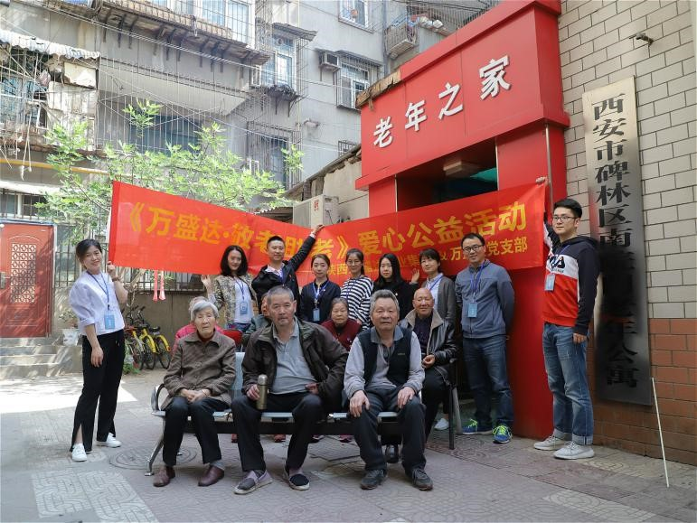
陕西万盛达企业敬老助老活动合影
老吾老以及人之老，每一位老人都需要关爱，而陪伴是最好的关爱。
4月17日上午，陕西万盛达信息科技有限公司党支部组织志愿者服务队来到碑林区南院门老年公寓，开展“送温暖献爱心”活动。
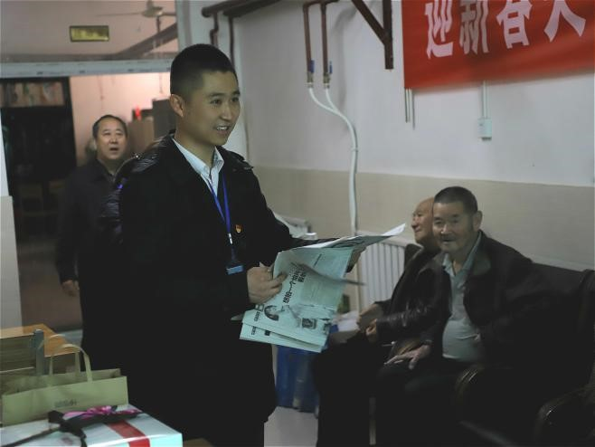
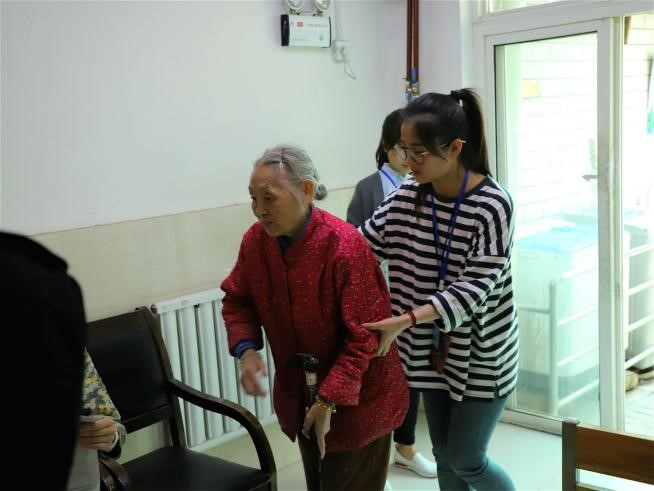
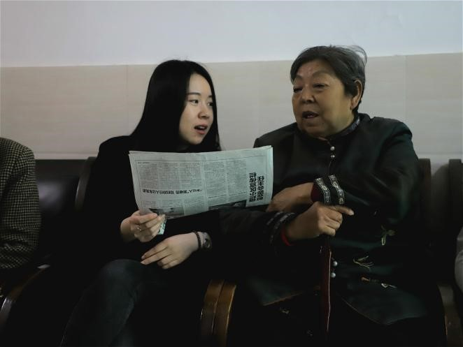
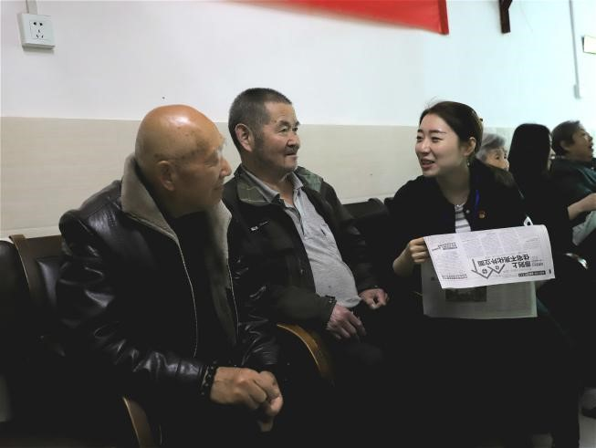
此次活动是陕西万盛达信息科技有限公司党支部开展党员志愿者服务社会、回馈社会的系列活动之一。在李刚董事长的大力倡导下，陕西万盛达信息科技有限公司党支部精心组织，党员带头，员工参与，以实际行动为老年公寓的老人们奉献自己的爱心。
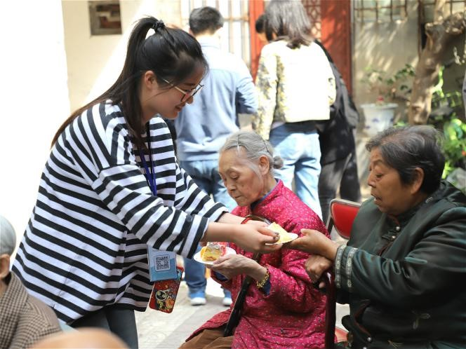
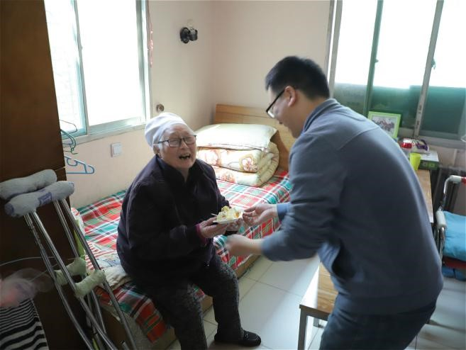
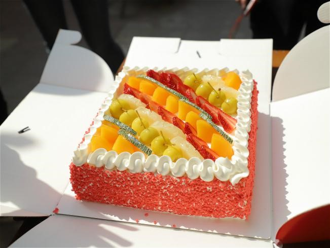
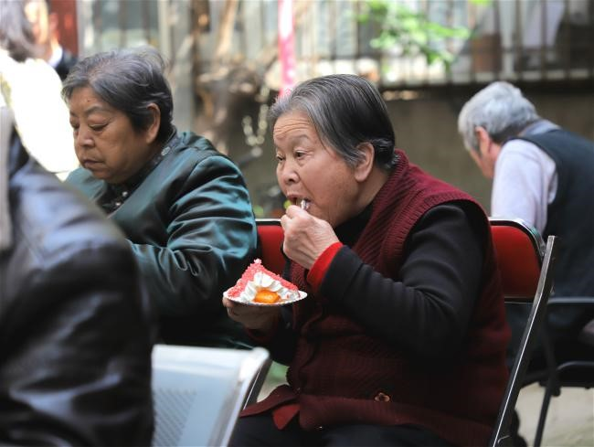
在老年公寓里，志愿者们或与老人唠家常，关心询问他们的生活起居、身体状况；或陪老人读报，帮他们了解发生在身边的事儿；或帮后厨择菜、洗菜……用朴实而真诚的行动表达着对老人们的关爱。蛋糕吃在口甜在心，志愿者们的到来，给老人们带来了欢声笑语，整个老年公寓洋溢着温馨祥和的气氛。
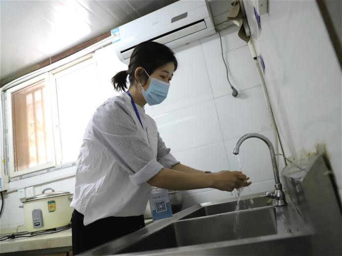
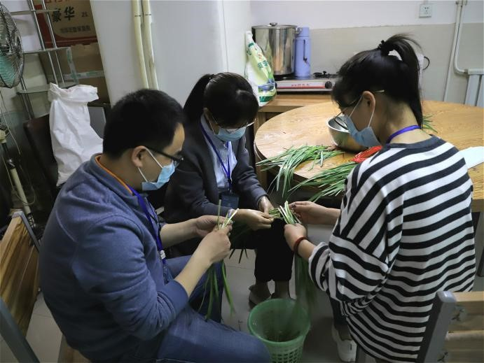
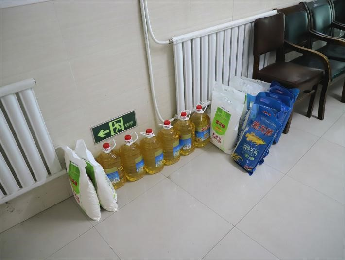
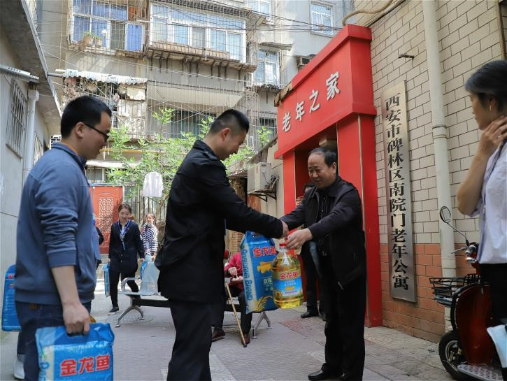
当天，志愿者们还为老年公寓送去米面油等价值千元的慰问品，让老人们深受感动。
对于本次活动，李刚董事长表示，敬老爱老是中华民族的传统美德。关怀老人，奉献爱心，是我们企业应尽的责任和义务，也展现了我们万盛达员工良好的精神风貌。
近年来，万盛达在用更好的技术和产品服务社会、回馈社会的同时，也自觉承担起了更多的社会责任。在陕西万盛达信息科技有限公司党支部成立之前，李刚董事长曾多次参与帮扶困难群众、慰问社区基层工作人员的活动。在他的亲身示范下，今后，陕西万盛达信息科技有限公司党支部将继续把组织员工志愿者开展爱心帮扶活动作为常规、持续的企业公益行为，为更多有需求的特殊群体提供爱心服务。